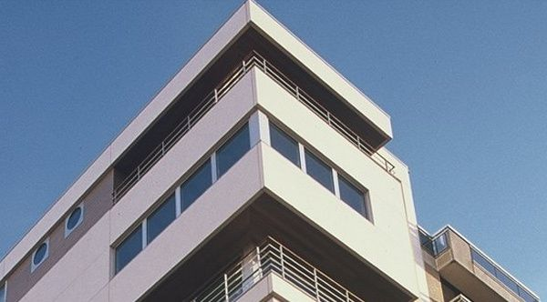

1
~3
min walk
Same promenade as the restaurant
Brasserie Bristol residences
ZEEDIJK 290–291 · HELDENPLEIN · ON THE DIKE
⏱ 200 M
APARTMENTS
SEA VIEW
3 RESIDENCES
BRISTOL · MORRISSON · RENÉE
Three sister residences clustered on the Heldenplein, all run by the on-site Brasserie Bristol. Sea-view studios and 2–3 BR apartments — the only option where you can step from the restaurant door onto your own promenade[5][6].
Apartments rather than hotel service. No advertised parking — assume on-street. The morning-after balcony coffee is the offer[5].
Pick if
you want to walk out the door onto the same dike as Bartholomeus.